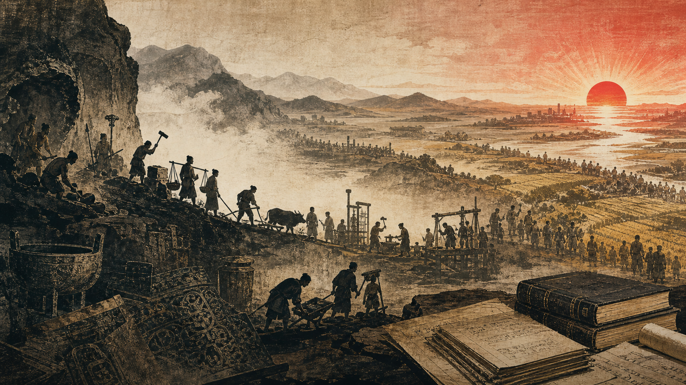

序言
为什么写这九章
《贺新郎·读史》新解

写在前面
2026年9月9日，是毛泽东同志逝世五十周年。
我想以九篇文章，纪念毛泽东同志。
“存在即合理。”这句话流传甚广，似乎可以为一切既成事实辩护。但黑格尔在《法哲学原理》序言中的原话是：
“凡是合乎理性的都是现实的；凡是现实的都是合乎理性的。”
这不是无关紧要的措辞差别。如果把“现实”降低为单纯的“存在”，把“合乎理性”解释为值得维护，那么奴隶制存在过，奴隶制便是合理的；封建等级存在过，封建等级便是合理的；一切压迫、剥削和战争，也都可以仅凭“已经存在”为自己作证。这样的判断什么都能证明，因而什么也没有说明。它把事实当作根据，把力量当作理性，把历史造成的结果宣布为不可改变的自然秩序。
黑格尔所说的“现实”，不是一切碰巧存在的东西；“合乎理性”，也不是给现存秩序颁发道德证书。一种社会关系成为现实，是因为一定的生产和生活条件使它成为必要；它组织社会生活，解决旧形式已经不能解决的问题，因而取得自己的历史根据。但这种根据并不保证它永远存在。产生它的活动还会产生新的力量和新的矛盾，使它赖以成立的条件逐渐成为它不能越过的界限。
问题由此改变了。面对一种已经存在的制度，重要的不是在“合理”或“不合理”之间作抽象选择，而是说明它怎样成为现实：它从什么条件中产生，曾经解决什么问题，又怎样在自己的发展中失去原有的根据。历史的必要性不是永恒性的证明，恰恰是历史界限的开始。
恩格斯的《家庭、私有制和国家的起源》正从这里提出问题。家庭、私有制和国家既然有自己的起源，就不是同人类一起降生的永恒制度，而是一定历史条件的产物。它们不是解释历史的现成前提，本身就是需要历史说明的结果。
这也就是这组文章把这些问题重新放到读者面前的理由。家庭、私有制和国家是人们习以为常的制度，也正因为如此，它们可以成为理解辩证唯物主义的入口。与其先给辩证唯物主义下一个抽象定义，再用历史为它举例，不如从这些制度为什么产生、曾经解决过什么问题、又怎样在自己的发展中暴露出界限开始。所谓辩证唯物主义，首先就体现在这种对现实关系的追问中。那些被资产阶级社会宣布为永恒、神圣和天经地义的东西，也只有在这种追问中，才会重新显出自己的历史内容和历史界限。
在成熟的资产阶级社会中，私有财产、契约自由、法律面前的平等和个人权利，常常被表述为超越历史的理性原则。它们并非没有现实内容：它们曾经打破人身依附和封建等级，为现代个人的形成创造了条件。但形式上的平等怎样同生产条件占有上的不平等并存，自由契约为什么会把一方对另一方的经济依赖表现为平等主体之间的自由选择，正是理解“资产阶级法权”时必须面对的问题。它以同一尺度对待不同的人，却不因此消除人们在生产关系和生活条件中的实际差别；即使旧制度已经被推翻，这种尺度及其造成的习惯也不会在一夜之间消失。
在中国，历史关系的自然化还常常采取家国伦理的语言。儒家思想不是一种超历史的“中国人性”，也不只是若干劝人为善的道德格言。父子、夫妇、君臣为什么能够被组织成彼此连接的伦理与政治秩序，必须放回宗法家庭、财产继承、土地关系、等级结构和国家治理中考察。这不是要用“封建思想”四个字取代分析，而是要说明家庭怎样成为财产和身份的组织形式，家庭伦理又怎样被提高为国家秩序的道德根据。
共产主义也因此不是一个与现实历史无关的“地上天国”，不意味着消灭一切矛盾、个人差异和公共管理，也不能先照哈耶克笔下那种由中央权力支配全部经济与个人生活的计划秩序来理解它。它要扬弃的，不是个人生活、亲密关系、生活资料的个人占有或组织公共事务的能力，而是生产条件的私人占有使社会化劳动反过来支配劳动者的关系，以及维持这种关系的阶级权力。它不许诺一个从此再无矛盾的世界，而是要使人们共同创造的社会力量不再以资本和同社会分离的公共权力的形式与人相对立，使联合起来的个人能够掌握生产和共同生活的条件。至于这种可能为什么会从现实中产生，又需要哪些条件，正是后文不能用一句结论代替的论证。
《贺新郎·读史》在这里不充当这些结论的理论根据。用“人猿相揖别”到“歌未竟，东方白”的词句串联九篇文章，是为了给上述问题一个可以循序展开的形式：从人怎样成为人，到人怎样创造家庭、财产、阶级和国家，再到这些力量怎样取得独立形式并反过来支配创造它们的人，最后追问人们能否以新的方式重新掌握自己的社会力量。词句只提供章节的线索，问题的论证仍必须回到原著和历史过程本身。
所以，这组文章不能从国家开始。国家已经包含阶级分裂、法律、税收、军队、官吏以及同社会相分离的公共权力；从国家开始，就会把需要解释的结果当成公共生活的自然前提。它也不能从私有制开始。占有物品同凭借生产条件支配他人的劳动不是一回事，稳定的私有财产必须以剩余、分工、交换、继承、法律和强制为中介。家庭同样不是一个不需要说明的自然事实。生育属于自然，谁能够继承财产、亲属关系怎样组织、夫妻和子女处在什么社会位置，却属于历史。
这些文章必须从一个更简单的前提开始：有生命的个人必须吃、喝、居住、穿衣，必须生产自己的生活。人不是先成为一个完成了的人，然后才进入历史；人正是在劳动、工具、语言和共同活动中成为人的。“人猿相揖别”之所以是起点，不只是因为它在年代上最早，而是因为它迫使一切后来的制度交代自己的前提。
从这里写起，也不是要把精神、法律、道德和革命归结为肚子的事情。只有人能够生活，这些社会力量才可能产生；也只有考察人怎样生产生活，才能说明这些力量为什么不是悬在半空的观念。人以劳动改变自然，也在劳动中改变自己；人创造社会关系，这些关系又取得独立形式，反过来规定人的生活。家庭、私有制、阶级和国家，都必须放回这个运动中理解。
黑格尔在《精神现象学》序言中反对把真理缩成一个脱离过程的现成结果。结果离开产生它的道路，只剩下一句没有生命的判断。这里所需要的正是这种对过程的说明：不是先宣布家庭、私有制和国家终将消亡，再让全部历史充当结论的例证；而是让它们从一定条件中产生，在解决现实问题时发展，又在自己的发展中产生不能由自身容纳的矛盾。
共产主义因此也不能在开头充当全部历史的答案。如果家庭、私有制、阶级和国家尚未被说明为历史关系，共产主义要扬弃什么便没有具体内容。未来不能从作者的愿望中取得根据，只能从现实关系已经产生而又不能解决的矛盾中取得可能。“歌未竟，东方白”不是宣布历史已经结束，而是说历史仍在人的实践中展开。
九篇文章将主要围绕恩格斯《家庭、私有制和国家的起源》展开，并借《贺新郎·读史》的词句打开问题，再回到马克思、恩格斯、列宁、黑格尔和毛泽东的原著。它们不是对这首词逐字逐句的文学注释，也不准备在这些原著之外另立一套历史理论。这里所做的，只是选择问题、连接原文、说明中间环节，并整理我在阅读中形成的理解。
追溯起源也不是为了停留在远古。现代家庭仍然承担财产继承、家务分工、养老育幼和经济依赖；私有制仍然把人与生产条件的关系表现为仿佛出自人性的“我的”和“你的”；国家承担公共职能，又以法律、军队、警察、税收和官吏维护一定的财产关系与社会秩序。这些制度越是以完成的形态站在我们面前，越容易被看成从来如此。回到起源，就是把这种自然外观重新变为历史问题。
这些问题最终指向今天：社会化生产同私人占有之间，普遍的社会依赖同孤立的个人生活之间，法律上的平等同现实的阶级差别之间，正在产生什么新的矛盾？家庭、学校、工作、法律、道德和日常舆论，又怎样把历史形成的关系变成个人习以为常的自我要求？如果这些关系并非永恒，它们将在什么条件下改变，又可能被怎样的新关系扬弃？
这些问题不会在序言中预先得到答案。写作必须经过必要的中介，承认每一种旧形式曾经解决过现实问题，也说明它怎样由自己的根据走向自己的界限。批判不是站在历史外面对过去宣判，而是使一个关系的产生、作用和局限在它自身的运动中显露出来。
这里写下的只是我在阅读中形成的理解，不是对这些问题的最终结论。个人的阅读、认识和表达能力都十分有限，文中的解释难免存在错误、片面和不成熟之处。我愿意把这些理解放到读者面前，作为继续阅读和讨论的线索。
纪念毛泽东同志，不应当只是重复赞美的话，也不应当只是回忆已经过去的历史。真正的纪念，是重新面对他所面对的问题，重新思考人民、历史、阶级、国家和社会变革，并在今天的现实条件下继续追问。我不能从事什么宏大的事业，但愿意用自己能够采取的方式，重新阅读《贺新郎·读史》，并把阅读马克思、恩格斯、列宁、黑格尔和毛泽东时形成的一些理解写下来。
这里还需要向读者说明：本文在构思、提纲整理、篇章结构和文字修改过程中，使用了 OpenAI 的 ChatGPT 作为辅助工具。它参与的是资料梳理和文字整理，不替我决定文章应当提出什么问题、采取什么立场，也不能替代原著阅读和独立思考。文章中的判断由我本人作出，可能存在的错误也由我本人承担。
我不会把人工智能生成的内容直接当作历史材料或理论依据。文中涉及的经典著作、历史事实和重要判断，都应尽可能返回原始文献核对。公开说明工具的参与，是为了区分文字整理与思想责任：工具可以帮助一个人表达得更清楚，却不能替这个人理解问题。
最后，仍然建议读者亲自阅读毛泽东同志的《贺新郎·读史》，并阅读马克思、恩格斯、列宁、黑格尔和毛泽东的原著。